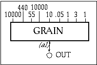

| instr 105 | |||||||||||||||||
| 105.orc | |||||||||||||||||
| 105.sco | |||||||||||||||||
|  | |||||||||||||||||
|
|||||||||||||||||
| ; Function 1 uses the GEN10 subroutine to compute a sine wave ; Function 3 uses the GEN20 subroutine to compute a Hanning window for use as a grain envelope f 1 0 4096 10 1 f 3 0 4097 20 2 1 ; inst start duration i 105 0 3 |
|||||||||||||||||